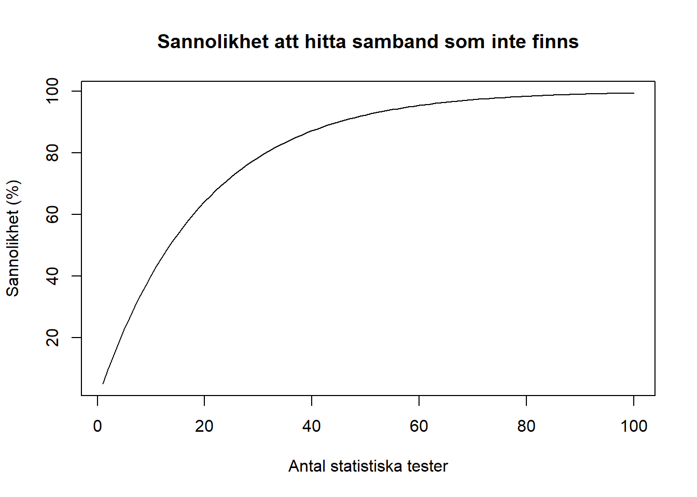

11 Vilseledande statistik
Här hittar du:
- Hur statistik kan användas vilseledande
- Vanliga misstag och tveksamma forskningspraktiker
- Råd för hur du undviker misstagen
11.1 Förväxla korrelation och kausalitet
11.2 Confounding
11.3 Selection bias, cherry-picking
11.4 Concept creep
11.5 Relativa och absoluta förändringar
11.6 Texas sharpshooter fallacy
11.7 Prosecutors fallacy
11.8 Goodharts law
11.9 Förväxla sannolikheter
Givet två händelser, A och B, förväxlas sannolikheten att A händer givet att B har hänt med sannolikheten att B händer givet att B har hänt.
I formella termer brukar det skrivas \(P(A\mid B)\) respektive \(P(B\mid A)\), vilket läses som “sannolikheten för A, givet B” samt omvänt “sannolikheten för B, givet A”. Symbolen \(P\) betyder sannolikhet eller mer precist probabilitet (från franskans probabilité, eller engelskans probability).
Att förväxla dessa sannolikheter är särskilt vanligt när man håller på med signifikanstest. Signifikanstest visar sannolikheten att erhålla datan givet nollhypotesen, eller \(P(data\mid nollhypotes)\). Det innebär att man får fram sannolikheten för resultatet under antagandet att nollhypotesen är sann. Man får alltså inte reda på om nollhypotesen är sann med hjälp av signifikanstest, utan det är alltså antagandet man utgår ifrån. Om resultatet är osannolikt (p är lågt), så är det osannolikt just med antagandet att nollhypotesen är sann.
Men detta förväxlas alltså ofta som sannolikheten att få nollhypotesen givet datan, eller \(P(nollhypotes\mid data)\). Det vill säga, att datan kommer att avgöra huruvida nollhypotesen är sann. Men det är alltså två olika sannolikheter.
Kallas också fallacy of the transposed conditional, confusion of the inverse, conditional probability fallacy eller bara inverse fallacy.
11.10 Garden of forking paths, multiple comparison, p-hacking
Ju fler statistiska tester man gör, desto lättare är det att hitta samband som inte finns (falskt alarm).
Faktum är att det är så enkelt att begå fel att man är garanterad att hitta åtminstone ett samband som inte finns om man gör ett 60-tal test. Och det är inte ovanligt att man gör många statistiska tester för att se vad man kan hitta.
Figuren nedan visar sannolikheten att hitta samband som inte finns. Om man gör 15 statistiska tester så är det alltså över 50 % chans att hitta ett samband som egentligen inte finns. Då kan man lika väl singla slant.

11.11 HARKing
11.12 Low power
11.13 Publication bias
11.14 Felaktig generalisering
11.15 “Statistiskt säkerställd”
Ett vanligt uttryck i massmedierna, och i viss mån vetenskapliga rapporter, är uttrycket att resultatet är statistiskt säkerställt. Ofta betyder det samma sak som statistiskt signifikant.
Men det är bättre att använda uttrycket statistiskt signifikant i stället, av två skäl.
För det första, statistik handlar om hur man hanterar osäkerhet, och utgångspunkten är att all inferentiell statistik är osäker (eftersom den bygger på induktiv logik). Därför är det missvisande att säga att man nått en slags säkerhet.
För det andra, statistisk signifikans handlar om sannolikheten att erhålla resultatet. Det innebär att det går att manipulera fram ett statistiskt signifikant resultat genom att göra många statistiska tester. Men trots att statistisk signifikans handlar om sannolikheten att erhålla resultatet, förväxlas det ofta som styrkan på bevisningen. Det är dock två olika saker (Dienes, 2008, p. 122; Royall, 1997). Att kalla ett resultat för statistiskt säkerställt under sådana omständigheter är därför gravt missvisande.
11.16 Missförstånd av konfidensintervall
Ibland kan man läsa att ett värde ligger inom ett konfidensintervall. Konfidensintervallet säger hur osäkert värdet ifråga är.
En opinionsundersökning som säger att Socialdemokraterna har fått 25 % av rösterna, med ett 95 % konfidensintervall på 23 till 27 %.
En vanlig tolkning är detta:
Det är 95 % sannolikhet att värdet ligger inom intervallet 23 till 25 %.
Men det är fel.
Man kan inte tillskriva sannolikhet till enskilda värden med hjälp av konfidensintervall.
Anledningen till att man inte kan tolka konfidensintervall på detta sätt beror på den statistik som används. Konfidensintervall (som Jerzy Neyman och Egon Pearson utvecklade) har sitt ursprung i frekventistisk statistik, vilket innebär att man räknar objektiva frekvenser och drar slutsatser om sannolikheter utifrån helheten av frekvenser över tid. Det går alltså inte tillskriva en sannolikhet till ett specifikt värde.
Låt oss illustrera det med ett tärningsexempel. Om du får en trea på en sex-sidig tärning så är sannolikheten att få en trea \(\frac{1}{6}\). Det innebär att över tid kommer tärningen att visa en trea \(\frac{1}{6}\) (eller 16 %) av gångerna. Men du kan ju omöjligt förutse om tärningen kommer att visa en trea om du bara slår den en gång. Det blir en trea eller så blir det inte det, det är antingen eller. Men om du slår tärningen hundra gånger kan du räkna ut sannolikheten för en trea över tid genom att jämföra med alla tärningskast tillsammans. Faktum är att ju fler gånger du slår tärningen, desto större sannolikhet att den närmar sig \(\frac{1}{6}\), vilket är anledningen till att konfidensintervallet krymper när observationerna ökar.
Vad många däremot tolkar konfidensintervallet som är sannolikheten för det enskilda värdet, eller för en specifik hypotes. Men den tolkningen är inte möjlig att göra utan att också byta statistik (till bayesiansk statistik).1
Konfidensintervall tolkas så här:
Över tid kommer 95 % av värdena att ligga inom intervallet 23 till 25 %.
Det innebär:
- Om man gör om samplingen 100 gånger, så kommer (i genomsnitt) 95 av 100 värden att ligga inom intervallet 23 till 27 %. De övriga värdena kommer att ligga utanför intervallet.
- Med andra ord så så finns värdet inom intervallet, eller så är det utanför. Det är antingen eller.
- Det finns ingen sannolikhet kopplad till ett enskilt värde, utan sannolikheten räknas ut genom att titta på samtliga värden över tid.
- Konfidensintervall handlar alltså om sampling över tid, vilket gäller all frekventistisk statistik.
På Interpreting Confidence Intervals: an interactive visualization kan du se hur konfidensintervall uppför sig i praktiken. Antingen så är ett enskilt värde inom konfidensintervallet, eller så är de det inte. Men 95 % av gångerna kommer de att vara inom intervallet.
11.17 Ecological fallacy
Den ekologiska fallasin innebär att man analyserar data på gruppnivå och sedan felaktigt drar slutsatser om individer.
Fallasin uppstår därför att man förväxlar analysnivåer. Om man analyserar kön, länder eller företag så gäller också slutsatserna kön, länder eller företag - inte de enskilda personerna.
Det finns fyra olika typer av ekologiska fallasier: Simpsons paradox.
11.18 Base rate fallacy
11.19 Simpsons paradox
Låt säga att universitetet ska anställa nya forskare. De anställer 54 % av männen som söker, men bara 46 % av kvinnorna som söker. Alla sökande är dock lika kvalificerade. Är det belägg för könsdiskriminering?
Du kanske svarar ja, siffrorna visar tydligt att män anställs i högre utsträckning än kvinnor.
Men låt oss gräva djupare än den ytliga analysen av procent.
| Män | Kvinnor | |
|---|---|---|
| Historia | 1 / 5 | 2 / 8 |
| Geografi | 6 / 8 | 4 / 5 |
| Universitet | 7 / 13 | 6 / 13 |
Läs tabellen ovan som att 1 man har anställts till historia, av totalt 5 manliga sökanden. Likaså har 2 kvinnor anställts av totalt 8 kvinnliga sökanden.
Totalt har alltså 7 manliga av totalt 13 manliga sökanden anställts på universitet som helhet (54 %), och 6 kvinnliga av totalt 13 kvinnliga sökanden (46 %). För enkelhetens skull kan vi göra om tabellen ovan med fraktioner till tabellen nedan med procent i stället.
| Män | Kvinnor | |
|---|---|---|
| Historia | 20 % | 25 % |
| Geografi | 75 % | 80 % |
| Universitet | 54 % | 46 % |
Med andra ord kan vi se att en högre andel kvinnor har anställts i både historia och geografi, men det är ändå en högre andel män som anställts på universitet som helhet. Om alla institutioner anställer fler kvinnor, hur kan män ändå bli överrepresenterade?
Det finns flera förklaringar vi kan avfärda direkt:
- Det är ju lika många sökanden (13 kvinnor och 13 män) så det kan inte bero på att fler män eller kvinnor har sökt.
- Att exemplet handlar om få personer (26 stycken) spelar heller ingen roll. Om vi multiplicerar siffrorna med 1 000 förblir resultatet detsamma.
Vad som däremot kan förklara detta är att fler kvinnor sökte tjänster som är svårare att få.
Historia anställde 3 av 13 sökanden, medan geografi anställde 10 av 13 sökanden. Det är med andra ord lättare att komma in på geografi, som också hade fler manliga sökanden.
Vi får med andra ord olika resultat beroende på om vi väljer att analysera datan på aggregerad nivå (universitetet som helhet) eller om vi väljer att analysera varje institution för sig.
Det är detta som kallas Simpsons paradox, att hierarkin i datan påverkar slutsatsen beroende på vilken nivå man väljer att analysera. Hierarkin är i det här fallet personer nästlade inom institutioner som är nästlade inom universitet. Ett annat exempel på hierarki är elever inom klasser inom en skola inom en kommun.
Bilden nedan visar Simpsons paradox visuellt, med annan typ av data.
Animerad bild av Simpsons paradox där datan antingen analyseras tillsammans eller gruppvis. När all data analyseras tillsammans är korrelationen negativ (röda linjen pekar nedåt). När datan analyseras gruppvis är varje korrelation positiv (röda linjerna pekar uppåt).
Vad ska du göra för att undvika Simpsons paradox?
- Kontrollera om din data innehåller hierarkier eller grupper av något slag.
- Fråga dig på om hierarkierna eller grupperna har analyserats var för sig eller tillsammans.
- Kontrollera om du får olika resultat när du analyserar varje grupp för sig, jämfört med om du analyserar alla grupper tillsammans.
11.20 Se även
- Checklista för statistika undersökningar
- Statistiska metoder för att upptäcka inkonsistenser i data
- GRIM Test (Brown & Heathers, 2016)
- GRIMMER test (Anaya, 2016)
- Introducing SPRITE (and the Case of the Carthorse Child)
Referenser
Dienes, Z. (2008). Understanding psychology as a science: An introduction to scientific and statistical inference. New York: Palgrave Macmillan.
Royall, R. M. (1997). Statistical evidence: A likelihood paradigm (1st ed.). London, New York: Chapman & Hall.
Brown, N. J. L., & Heathers, J. A. J. (2016). The GRIM Test: A Simple Technique Detects Numerous Anomalies in the Reporting of Results in Psychology. Social Psychological and Personality Science. doi:10.1177/1948550616673876
Anaya, J. (2016). The GRIMMER test: A method for testing the validity of reported measures of variability. PeerJ Preprints. Retrieved from https://peerj.com/preprints/2400v1/
Det är dock värt att notera att om man använder bayesiansk statistik med uniforma priors, så får man exakt samma intervall (så kallade credible intervals) som konfidensintervallet. Men tolkningen är dock annorlunda.↩